Chapter 14 Predictive tasks using bmbstats
Simple implementation of the prediction tasks in bmbstats is done with bmbstats::cv_model function, which is short of “cross-validate model”. This function is more of a teaching tool, than something more thorough like the caret (Kuhn 2020) or mlr and mlr3 packages (Bischl et al. 2016; Lang et al. 2019). But bmbstats::cv_model is still powerful and versatile for the sports science prediction tasks (e.g. bmbstats::rct_predict is a function that we will introduce later and it was built using bmbstats::cv_model results). bmbstats::cv_model is built using the outstanding hardhat package (Vaughan and Kuhn 2020).
bmbstats::cv_model has three components: (1) fitting or modeling function (set using the model_func parameter with the bmbstats::lm_model(default) and bmbstats::baseline_model being implemented using stats::lm linear regression function), (2) prediction function; which is used for predicting on the new and training data (set using the predict_func parameter with bmbstats::generic_predict being the default that calls the default predict method, or stats::predict.lm for the lm classes), and (3) performance function; which is used to return performance estimators (set using the perf_func parameter with bmbstats::performance_metrics being the default). This will be much clearer once we start implementing the bmbstats::cv_model.
To demonstrate bmbstats::cv_model function, let’s generate simple data for prediction:
require(tidyverse)
require(bmbstats)
require(cowplot)
set.seed(1667)
# Model (DGP)
random_error <- 2
sinus_data <- tibble(
x = seq(0.8, 2.5, 0.05),
observed_y = 30 + 15 * (x * sin(x)) + rnorm(n = length(x), mean = 0, sd = random_error),
true_y = 30 + 15 * (x * sin(x))
)
head(sinus_data)
#> # A tibble: 6 x 3
#> x observed_y true_y
#> <dbl> <dbl> <dbl>
#> 1 0.8 41.8 38.6
#> 2 0.85 38.5 39.6
#> 3 0.9 42.3 40.6
#> 4 0.95 41.5 41.6
#> 5 1 40.6 42.6
#> 6 1.05 42.7 43.7ggplot(sinus_data, aes(x = x)) +
theme_cowplot(8) +
geom_point(aes(y = observed_y)) +
geom_line(aes(y = true_y))
This data has irreducible error with SD equal to 2 (a.u.). Let’s use simple linear regression to predict observed \(y\), but evaluate model performance using 10 repeats of 5-folds cross-validations:
model1 <- bmbstats::cv_model(
observed_y ~ x,
sinus_data,
# These are default options, but I will list them here
model_func = lm_model,
predict_func = generic_predict,
perf_func = performance_metrics,
# CV parameters
control = model_control(
cv_folds = 5,
cv_repeats = 10,
seed = 1667
)
)
model1
#> Training data consists of 2 predictors and 35 observations. Cross-Validation of the model was performed using 10 repeats of 5 folds.
#>
#> Model performance:
#>
#> metric training training.pooled testing.pooled mean
#> MBE -1.786530e-14 3.608730e-15 0.01201151 0.03878805
#> MAE 3.307366e+00 3.281275e+00 3.42055845 3.40542550
#> RMSE 3.830961e+00 3.811531e+00 4.00171168 3.91431323
#> PPER 2.500597e-01 2.532192e-01 0.24118080 0.22872198
#> SESOI to RMSE 6.520075e-01 6.461322e-01 0.61542490 0.67035639
#> R-squared 6.125604e-01 6.164804e-01 0.57725715 0.59398198
#> MinErr -5.833192e+00 -6.481721e+00 -6.66660654 -4.83585586
#> MaxErr 9.531759e+00 1.069301e+01 10.89240388 5.74134976
#> MaxAbsErr 9.531759e+00 1.069301e+01 10.89240388 6.54646863
#> SD min max
#> 1.39091047 -3.56918463 2.8362928
#> 0.71086848 1.90802477 4.6087168
#> 0.78174879 2.19948265 5.4637498
#> 0.05453147 0.15058656 0.3811788
#> 0.16588651 0.47111531 1.1614533
#> 0.20141946 -0.07623944 0.8893906
#> 1.34488218 -6.66660654 -1.8826434
#> 2.57512537 1.06931471 10.8924039
#> 1.91850684 3.68446911 10.8924039SESOI in the above example is calculated using 0.2 x SD of the outcome variable (i.e. observed_y) which represents Cohen’s trivial effect. SESOI constants of estimation function (that uses training data set to estimate SESOI) can be set up using the SESOI_lower and SESOI_upper parameters (to which the default are bmbstats::SESOI_lower_func and bmbstats::SESOI_upper_func respectively).
The above output represents performance summary using the estimators returned by the bmbstats::performance_metrics. bmbstats has numerous cost functions implemented that could be called using the bmbstats::cost_ prefix.
The above output can be plotted using the plot command and type = "estimators" parameter:

Error bars represent range of estimator values across cross-validation folds, while the dashed line indicate training performance. There estimates can be accessed in the returned object, i.e. model1$performance for training, and model1$cross_validation$performance for cross-validation.
14.1 How to implement different performance metrics?
To implement different performance metrics you need to write your own function that return named vector using the following template:
# My performance metrics
my_perf_metrics <- function(observed,
predicted,
SESOI_lower = 0,
SESOI_upper = 0,
na.rm = FALSE) {
c(
RMSE = cost_RMSE(
observed = observed,
predicted = predicted,
SESOI_lower = SESOI_lower,
SESOI_upper = SESOI_upper,
na.rm = na.rm
),
PPER = cost_PPER(
observed = observed,
predicted = predicted,
SESOI_lower = SESOI_lower,
SESOI_upper = SESOI_upper,
na.rm = na.rm
),
`R-squared` = cost_R_squared(
observed = observed,
predicted = predicted,
SESOI_lower = SESOI_lower,
SESOI_upper = SESOI_upper,
na.rm = na.rm
)
)
}
# Re-run the cv_model with my perf metrics
model2 <- bmbstats::cv_model(
observed_y ~ x,
sinus_data,
# Use our performance metrics
perf_func = my_perf_metrics,
# CV parameters
control = model_control(
cv_folds = 5,
cv_repeats = 10,
seed = 1667
)
)
model2
#> Training data consists of 2 predictors and 35 observations. Cross-Validation of the model was performed using 10 repeats of 5 folds.
#>
#> Model performance:
#>
#> metric training training.pooled testing.pooled mean SD
#> RMSE 3.8309607 3.8115312 4.0017117 3.914313 0.78174879
#> PPER 0.2500597 0.2532192 0.2411808 0.228722 0.05453147
#> R-squared 0.6125604 0.6164804 0.5772572 0.593982 0.20141946
#> min max
#> 2.19948265 5.4637498
#> 0.15058656 0.3811788
#> -0.07623944 0.8893906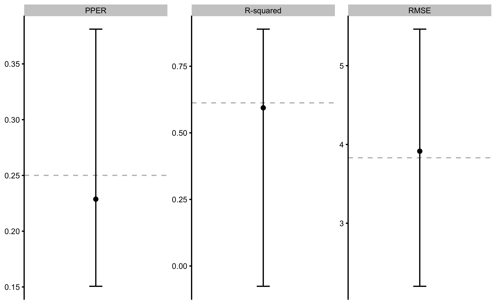
14.2 How to use different prediction model?
To use different prediction model instead of stats::lm, you will need to modify the model function using the following template. Let’s use Regression Tree using the rpart package (Therneau and Atkinson 2019):
require(rpart)
# My prediction model
my_model_func <- function(predictors,
outcome,
SESOI_lower = 0,
SESOI_upper = 0,
na.rm = FALSE,
...) {
data <- cbind(.outcome = outcome, predictors)
rpart(.outcome ~ ., data = data, ...)
}
# Call the cv_model
model3 <- bmbstats::cv_model(
observed_y ~ x,
sinus_data,
# Use our model function
model_func = my_model_func,
# CV parameters
control = model_control(
cv_folds = 5,
cv_repeats = 10,
seed = 1667
),
# Do not create intercept column
intercept = TRUE
)
model3
#> Training data consists of 2 predictors and 35 observations. Cross-Validation of the model was performed using 10 repeats of 5 folds.
#>
#> Model performance:
#>
#> metric training training.pooled testing.pooled mean
#> MBE 2.030618e-16 -3.045865e-16 0.03760974 0.03641386
#> MAE 2.023389e+00 2.268546e+00 2.60389737 2.57549008
#> RMSE 2.591359e+00 2.765355e+00 3.29362285 3.19456487
#> PPER 3.621870e-01 3.437038e-01 0.29087228 0.27713101
#> SESOI to RMSE 9.639014e-01 8.905739e-01 0.74773376 0.83310652
#> R-squared 8.227265e-01 7.981214e-01 0.71366153 0.74453263
#> MinErr -5.699018e+00 -6.168662e+00 -9.88715278 -4.49333669
#> MaxErr 6.097584e+00 6.427283e+00 7.22167137 4.47699323
#> MaxAbsErr 6.097584e+00 6.427283e+00 9.88715278 5.86162382
#> SD min max
#> 1.38472089 -3.5600378 2.4319242
#> 0.60425150 0.9905252 3.7964691
#> 0.67699316 1.1382304 4.6196434
#> 0.07822901 0.1429604 0.6357025
#> 0.26906599 0.5367524 2.2239463
#> 0.13595473 0.3724261 0.9682861
#> 2.25968230 -9.8871528 -0.4531138
#> 1.95348134 -0.3225821 7.2216714
#> 1.31129516 1.8902345 9.8871528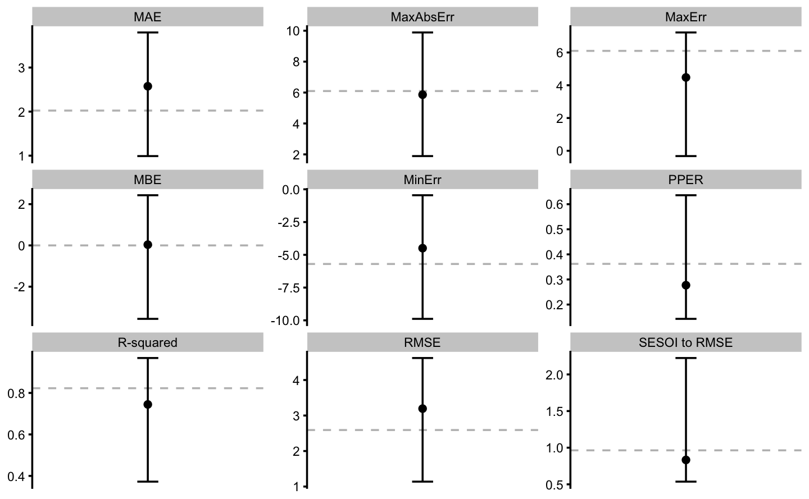
14.3 Example of using tuning parameter
Let’s use the same example from the Overfitting section of the Prediction chapter - polynomial fit. The objective is to select the polynomial degree that gives the best cross-validation performance.
poly_tuning <- seq(1, 12)
my_model_func <- function(predictors,
outcome,
SESOI_lower = 0,
SESOI_upper = 0,
na.rm = FALSE,
poly_n = 1) {
data <- cbind(.outcome = outcome, predictors)
lm(.outcome ~ poly(x, poly_n), data = data)
}
# Model performance across different tuning parameters
poly_perf <- map_df(poly_tuning, function(poly_n) {
model <- bmbstats::cv_model(
observed_y ~ x,
sinus_data,
# CV parameters
control = model_control(
cv_folds = 5,
cv_repeats = 10,
seed = 1667
),
model_func = my_model_func,
poly_n = poly_n
)
data.frame(
poly_n = poly_n,
model$cross_validation$performance$summary$overall
)
})
head(poly_perf)
#> poly_n metric training training.pooled testing.pooled mean
#> 1 1 MBE -1.339861e-14 1.081218e-15 0.01201151 0.03878805
#> 2 1 MAE 3.307366e+00 3.281275e+00 3.42055845 3.40542550
#> 3 1 RMSE 3.830961e+00 3.811531e+00 4.00171168 3.91431323
#> 4 1 PPER 2.500597e-01 2.532192e-01 0.24118080 0.22872198
#> 5 1 SESOI to RMSE 6.520075e-01 6.461322e-01 0.61542490 0.67035639
#> 6 1 R-squared 6.125604e-01 6.164804e-01 0.57725715 0.59398198
#> SD min max
#> 1 1.39091047 -3.56918463 2.8362928
#> 2 0.71086848 1.90802477 4.6087168
#> 3 0.78174879 2.19948265 5.4637498
#> 4 0.05453147 0.15058656 0.3811788
#> 5 0.16588651 0.47111531 1.1614533
#> 6 0.20141946 -0.07623944 0.8893906In the figure below the results of this analysis is depicted. Dashed red line represents cross-validated performance (using performance on the pooled testing data).
ggplot(poly_perf, aes(x = poly_n)) +
theme_cowplot(8) +
geom_line(aes(y = training), color = "blue", alpha = 0.8) +
geom_line(aes(y = testing.pooled), color = "red", linetype = "dashed", alpha = 0.8) +
facet_wrap(~metric, scales = "free_y")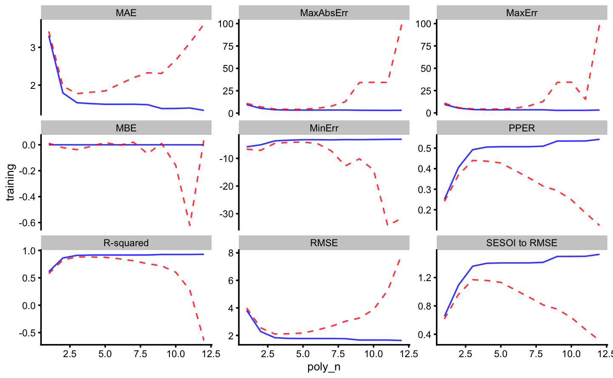
As can be seen, the best predictive performance is with 3rd polynomial degrees. The figure below depicts RMSE estimator for higher resolution image.
ggplot(
filter(
poly_perf,
metric == "RMSE"
),
aes(x = poly_n)
) +
theme_cowplot(8) +
geom_line(aes(y = training), color = "blue", alpha = 0.8) +
geom_line(aes(y = testing.pooled), color = "red", linetype = "dashed", alpha = 0.8) +
ylab("RMSE")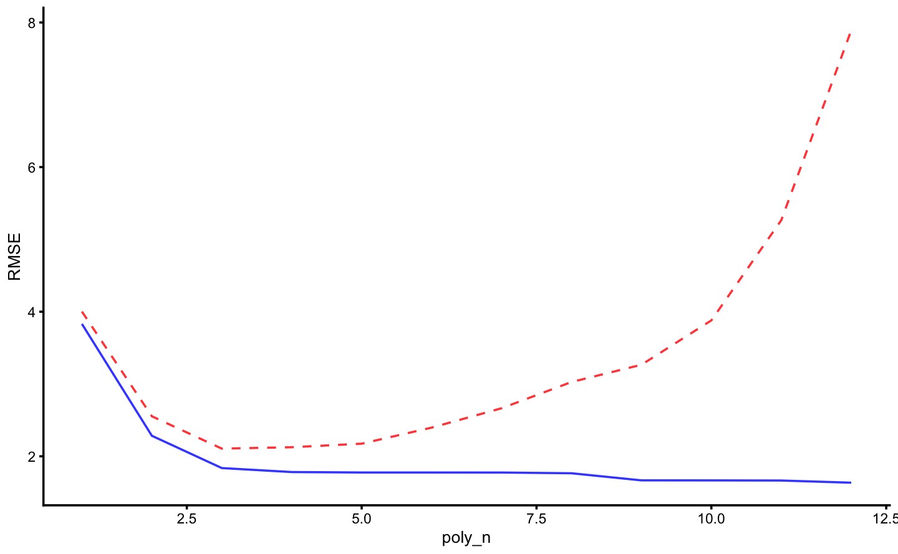
14.4 Plotting
Various diagnostic graphs can be easily generated using a generic plot function. Let’s fit a 3rd degree polynomial model first:
model4 <- bmbstats::cv_model(
observed_y ~ poly(x, 3),
sinus_data,
# CV parameters
control = model_control(
cv_folds = 5,
cv_repeats = 10,
seed = 1667
)
)
model4
#> Training data consists of 4 predictors and 35 observations. Cross-Validation of the model was performed using 10 repeats of 5 folds.
#>
#> Model performance:
#>
#> metric training training.pooled testing.pooled mean
#> MBE -1.299275e-14 2.060564e-15 -0.03724767 -0.02930855
#> MAE 1.534398e+00 1.509623e+00 1.77622691 1.77362879
#> RMSE 1.837539e+00 1.807043e+00 2.10648622 2.07925558
#> PPER 4.925435e-01 5.041349e-01 0.44022003 0.40113906
#> SESOI to RMSE 1.359326e+00 1.362863e+00 1.16912846 1.22806404
#> R-squared 9.108623e-01 9.137963e-01 0.88289646 0.89017328
#> MinErr -3.676547e+00 -4.335315e+00 -4.57284164 -2.99135803
#> MaxErr 3.819068e+00 4.380287e+00 4.43506709 2.54927044
#> MaxAbsErr 3.819068e+00 4.380287e+00 4.57284164 3.45414085
#> SD min max
#> 0.83265732 -2.3250491 1.3681763
#> 0.33144744 1.0364816 2.3883585
#> 0.29737351 1.3940723 2.7092065
#> 0.05824287 0.2221031 0.5513211
#> 0.18072558 0.9198745 1.7145206
#> 0.04568934 0.7776291 0.9626275
#> 0.81846093 -4.5728416 0.2782154
#> 1.17063338 -0.2033888 4.4350671
#> 0.57631575 2.3829256 4.5728416To plot the residuals, use type="residuals" in the plot function:
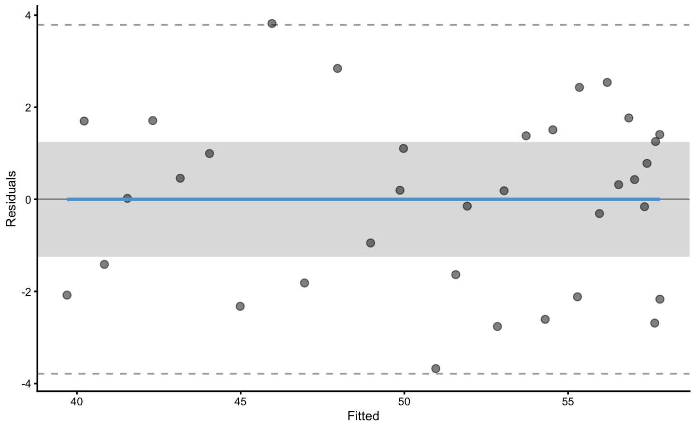
The following code will plot the training and testing residuals across cross-validation folds:
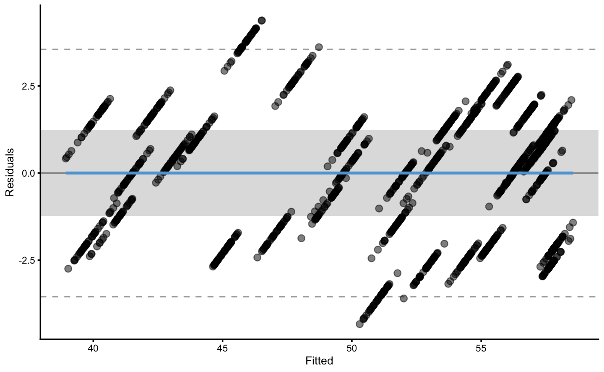
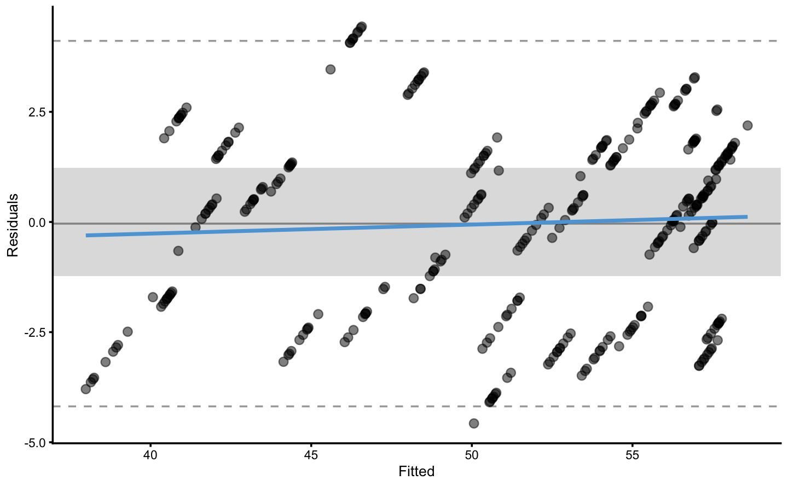
To plot bias-variance error decomposition across cross-validation folds use:
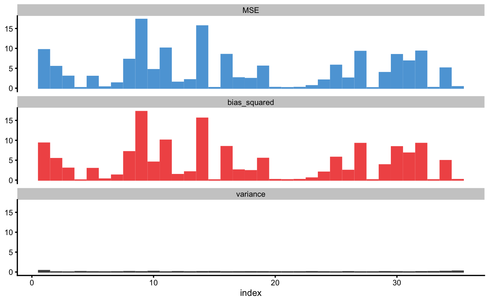
The above figure depicts bias-variance for each observation index. To plot against the outcome variable value use:

Prediction error (i.e. residuals) can also be plotted as boxes, demonstrating the mean (i.e. bias) and spread (i.e. variance). To plot prediction error again outcome index use:
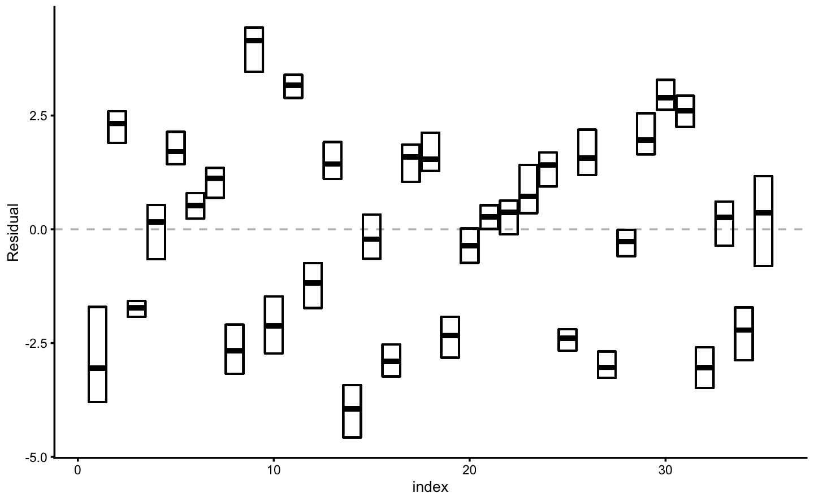
Similar to plotting bias-variance, prediction error distribution (actually, a spread or range) can be plotted against outcome variable value:
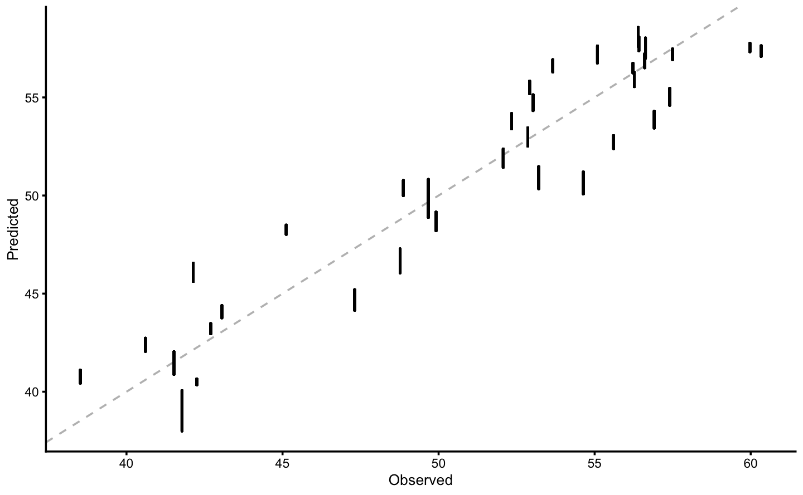
And finally, to plot the performance estimator use:
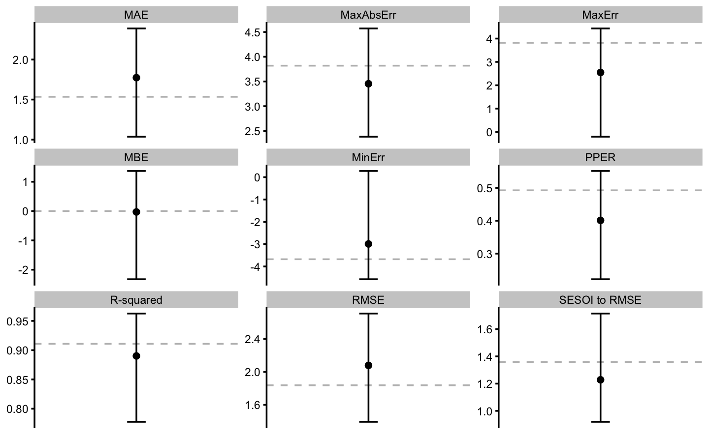
Each of these plots can be customized using the control=bmbstats::plot_control argument and function.
14.5 Comparing models
Comparing models is beyond the scope of this book, but I will provide a short introduction using bmbstats. Let’s use our model3 that used rpart Regression Tree, and model4 that used 3rd degree polynomial fit, to plot the estimators range across cross-validation folds.
plot_data <- rbind(
data.frame(model = "rpart", model3$cross_validation$performance$summary$overall),
data.frame(model = "poly", model4$cross_validation$performance$summary$overall)
)
plot_data
#> model metric training training.pooled testing.pooled mean
#> 1 rpart MBE 2.030618e-16 -3.045865e-16 0.03760974 0.03641386
#> 2 rpart MAE 2.023389e+00 2.268546e+00 2.60389737 2.57549008
#> 3 rpart RMSE 2.591359e+00 2.765355e+00 3.29362285 3.19456487
#> 4 rpart PPER 3.621870e-01 3.437038e-01 0.29087228 0.27713101
#> 5 rpart SESOI to RMSE 9.639014e-01 8.905739e-01 0.74773376 0.83310652
#> 6 rpart R-squared 8.227265e-01 7.981214e-01 0.71366153 0.74453263
#> 7 rpart MinErr -5.699018e+00 -6.168662e+00 -9.88715278 -4.49333669
#> 8 rpart MaxErr 6.097584e+00 6.427283e+00 7.22167137 4.47699323
#> 9 rpart MaxAbsErr 6.097584e+00 6.427283e+00 9.88715278 5.86162382
#> 10 poly MBE -1.299275e-14 2.060564e-15 -0.03724767 -0.02930855
#> 11 poly MAE 1.534398e+00 1.509623e+00 1.77622691 1.77362879
#> 12 poly RMSE 1.837539e+00 1.807043e+00 2.10648622 2.07925558
#> 13 poly PPER 4.925435e-01 5.041349e-01 0.44022003 0.40113906
#> 14 poly SESOI to RMSE 1.359326e+00 1.362863e+00 1.16912846 1.22806404
#> 15 poly R-squared 9.108623e-01 9.137963e-01 0.88289646 0.89017328
#> 16 poly MinErr -3.676547e+00 -4.335315e+00 -4.57284164 -2.99135803
#> 17 poly MaxErr 3.819068e+00 4.380287e+00 4.43506709 2.54927044
#> 18 poly MaxAbsErr 3.819068e+00 4.380287e+00 4.57284164 3.45414085
#> SD min max
#> 1 1.38472089 -3.5600378 2.4319242
#> 2 0.60425150 0.9905252 3.7964691
#> 3 0.67699316 1.1382304 4.6196434
#> 4 0.07822901 0.1429604 0.6357025
#> 5 0.26906599 0.5367524 2.2239463
#> 6 0.13595473 0.3724261 0.9682861
#> 7 2.25968230 -9.8871528 -0.4531138
#> 8 1.95348134 -0.3225821 7.2216714
#> 9 1.31129516 1.8902345 9.8871528
#> 10 0.83265732 -2.3250491 1.3681763
#> 11 0.33144744 1.0364816 2.3883585
#> 12 0.29737351 1.3940723 2.7092065
#> 13 0.05824287 0.2221031 0.5513211
#> 14 0.18072558 0.9198745 1.7145206
#> 15 0.04568934 0.7776291 0.9626275
#> 16 0.81846093 -4.5728416 0.2782154
#> 17 1.17063338 -0.2033888 4.4350671
#> 18 0.57631575 2.3829256 4.5728416ggplot(
plot_data,
aes(y = model, x = mean)
) +
theme_bw(8) +
geom_errorbarh(aes(xmax = max, xmin = min),
color = "black",
height = 0
) +
geom_point() +
geom_point(aes(x = training), color = "red", shape = "|", size = 3) +
xlab("") +
ylab("") +
facet_wrap(~metric, scales = "free_x")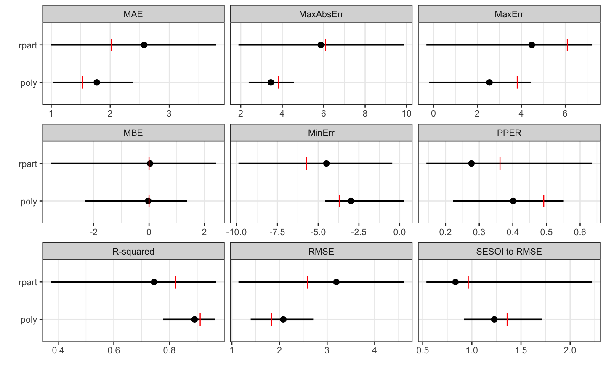
As can be seen from the figure, polynomial fit represents a more predictive model. But we can also perform statistical significance test using the cross-validation performance, for let’s say RMSE estimator. Since the CV folds are the same (which we achieved by using the same seed number), we can do dependent groups analysis. But before, let’s plot the CV estimates of the RMSE:
rmse_rpart <- filter(
model3$cross_validation$performance$folds$testing,
metric == "RMSE"
)
head(rmse_rpart)
#> fold metric value
#> RMSE...1 Fold1.Rep01 RMSE 3.535807
#> RMSE...2 Fold2.Rep01 RMSE 1.138230
#> RMSE...3 Fold3.Rep01 RMSE 3.175505
#> RMSE...4 Fold4.Rep01 RMSE 2.995586
#> RMSE...5 Fold5.Rep01 RMSE 3.739492
#> RMSE...6 Fold1.Rep02 RMSE 3.931772rmse_poly <- filter(
model4$cross_validation$performance$folds$testing,
metric == "RMSE"
)
head(rmse_poly)
#> fold metric value
#> RMSE...1 Fold1.Rep01 RMSE 1.745409
#> RMSE...2 Fold2.Rep01 RMSE 2.408312
#> RMSE...3 Fold3.Rep01 RMSE 2.039587
#> RMSE...4 Fold4.Rep01 RMSE 2.670888
#> RMSE...5 Fold5.Rep01 RMSE 2.070925
#> RMSE...6 Fold1.Rep02 RMSE 2.082951rmse_data <- rbind(
data.frame(model = "rpart", value = rmse_rpart$value),
data.frame(model = "poly", value = rmse_poly$value)
)
bmbstats::plot_raincloud(
rmse_data,
value = "value",
value_label = "RMSE",
groups = "model"
)
And we can finally perform the dependent groups analysis:
rmse_perf <- bmbstats::compare_dependent_groups(
pre = rmse_rpart$value,
post = rmse_poly$value
)
rmse_perf
#> Bootstrap with 2000 resamples and 95% bca confidence intervals.
#>
#> estimator value lower upper
#> SESOI lower -0.13539863 -0.17607368 -0.10927225
#> SESOI upper 0.13539863 0.10927225 0.17607368
#> SESOI range 0.27079726 0.21854450 0.35214735
#> Mean change -1.11530929 -1.32646984 -0.89455705
#> SD change 0.76022031 0.60218574 0.99219147
#> %CV change -68.16228649 -108.17299822 -50.50157994
#> % change -30.38499807 -35.93194876 -19.10373522
#> Ratio 0.69615002 0.64068051 0.80896265
#> Cohen's d -1.64744544 -2.17427538 -1.02403852
#> CLES 0.06573315 0.02725296 0.16669235
#> OVL 0.41009713 0.27810102 0.60868406
#> Mean change to SESOI -4.11861361 -5.43568845 -2.56009630
#> SD change to SESOI 2.80734121 2.51010263 3.14489890
#> pLower 0.89827180 0.76960554 0.95994450
#> pEquivalent 0.04856260 0.02183432 0.09330646
#> pHigher 0.05316560 0.01748864 0.13895348# Do the statistical significance test
rmse_NHST <- bmbstats::bootstrap_NHST(
rmse_perf,
estimator = "Mean change",
test = "two.sided",
null_hypothesis = 0
)
rmse_NHST
#> Null-hypothesis significance test for the `Mean change` estimator
#> Bootstrap result: Mean change=-1.115, 95% CI [-1.326, -0.895]
#> H0=0, test: two.sided
#> p=0.000499750124937531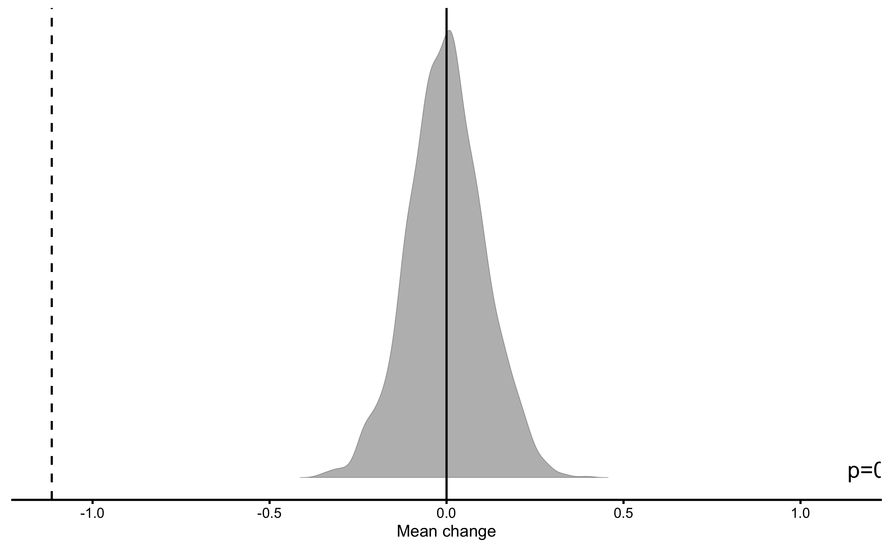
So we can conclude that polynomial model has significantly better performance, using RMSE estimator, than Regression Tree model that cannot be explained as a pure (sampling) chance.
But to be honest, model comparison is beyond my current knowledge and I am not sure that comparing the estimators is the right approach. We could instead compare model residuals. Since CV folds are identical, we can perform dependent groups analysis as well. But before doing that, let’s plot the CV residuals:
resid_data <- rbind(
data.frame(model = "rpart", value = model3$cross_validation$data$testing$residual),
data.frame(model = "poly", value = model4$cross_validation$data$testing$residual)
)
bmbstats::plot_raincloud(
resid_data,
value = "value",
value_label = "CV residuals",
groups = "model"
)
Or their difference:
bmbstats::plot_raincloud(
data.frame(diff = model4$cross_validation$data$testing$residual -
model3$cross_validation$data$testing$residual),
value = "diff",
value_label = "CV residuals difference"
)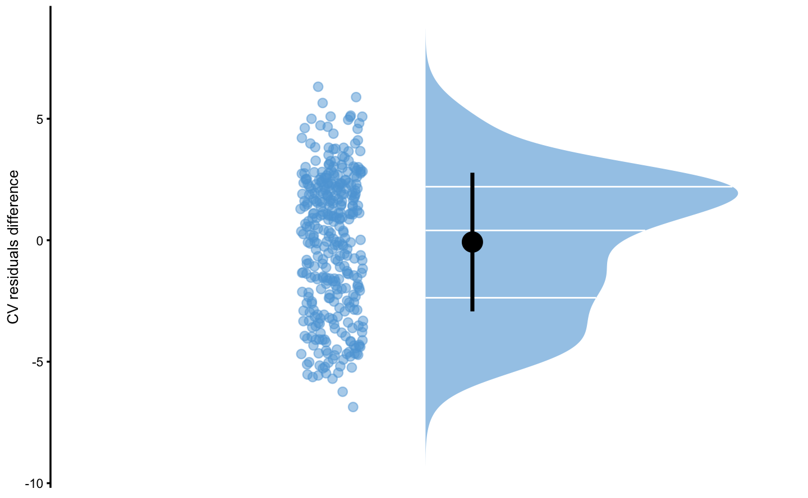
And we can finally perform the dependent groups analysis:
resid_perf <- bmbstats::compare_dependent_groups(
pre = model3$cross_validation$data$testing$residual,
post = model4$cross_validation$data$testing$residual
)
resid_perf
#> Bootstrap with 2000 resamples and 95% bca confidence intervals.
#>
#> estimator value lower upper
#> SESOI lower -6.596246e-01 -7.094456e-01 -6.153383e-01
#> SESOI upper 6.596246e-01 6.153383e-01 7.094456e-01
#> SESOI range 1.319249e+00 1.230677e+00 1.418891e+00
#> Mean change -7.485741e-02 -3.678773e-01 2.267774e-01
#> SD change 2.853680e+00 2.711641e+00 3.019229e+00
#> %CV change -3.812154e+03 -1.203382e+06 -1.112797e+03
#> % change -1.816303e+01 -8.898433e+01 6.621511e+01
#> Ratio 8.183697e-01 1.101567e-01 1.662151e+00
#> Cohen's d -2.269697e-02 -1.118320e-01 6.659056e-02
#> CLES 4.923722e-01 4.625656e-01 5.225228e-01
#> OVL 9.909454e-01 9.689477e-01 9.999341e-01
#> Mean change to SESOI -5.674243e-02 -2.795801e-01 1.664764e-01
#> SD change to SESOI 2.163109e+00 2.042661e+00 2.298416e+00
#> pLower 4.188782e-01 3.767829e-01 4.605721e-01
#> pEquivalent 1.826035e-01 1.721664e-01 1.933616e-01
#> pHigher 3.985183e-01 3.604887e-01 4.386698e-01# Do the statistical significance test
resid_NHST <- bmbstats::bootstrap_NHST(
resid_perf,
estimator = "Mean change",
test = "two.sided",
null_hypothesis = 0
)
resid_NHST
#> Null-hypothesis significance test for the `Mean change` estimator
#> Bootstrap result: Mean change=-0.075, 95% CI [-0.368, 0.227]
#> H0=0, test: two.sided
#> p=0.617
According to Cross-Validation residuals analysis, the two models didn’t perform statistically different that can be attributed to chance.
It bears repeating that I am not sure either of these are valid model comparison methods, so use this only as an example. Model comparison also involves deciding about model complexity and selecting the simpler model.
14.6 Bootstrapping model
Cross-validations is one technique that allows us to evaluate model performance on unseen data, check for model over-fitting, and finally to tune the model parameters (i.e. using tuning parameters, like we did by varying the polynomial degrees) to get the best predictive performance.
With statistical inferences we are interested in generalizing beyond our sample, to a bigger population from which the sample is taken. We can generalize model parameters (i.e. intercept and slope of parameter coefficients), but also model performance (i.e. what is the true relationship between two or more variables). We can thus bootstrap the above model to get confidence intervals for both parameters and performance estimators.
Let’s get the 95% bootstrapped CIs for the polynomial model:
model4.boot.coef <- bmbstats::bmbstats(
data = sinus_data,
estimator_function = function(data, SESOI_lower, SESOI_upper, na.rm, init_boot) {
model <- lm(observed_y ~ poly(x, 3), data)
coef(model)
}
)
model4.boot.coef
#> Bootstrap with 2000 resamples and 95% bca confidence intervals.
#>
#> estimator value lower upper
#> (Intercept) 51.094279 48.87153 52.96739
#> poly(x, 3)1 28.497988 19.59403 36.45944
#> poly(x, 3)2 -18.194924 -23.94497 -13.14120
#> poly(x, 3)3 -8.027118 -13.13937 -4.52746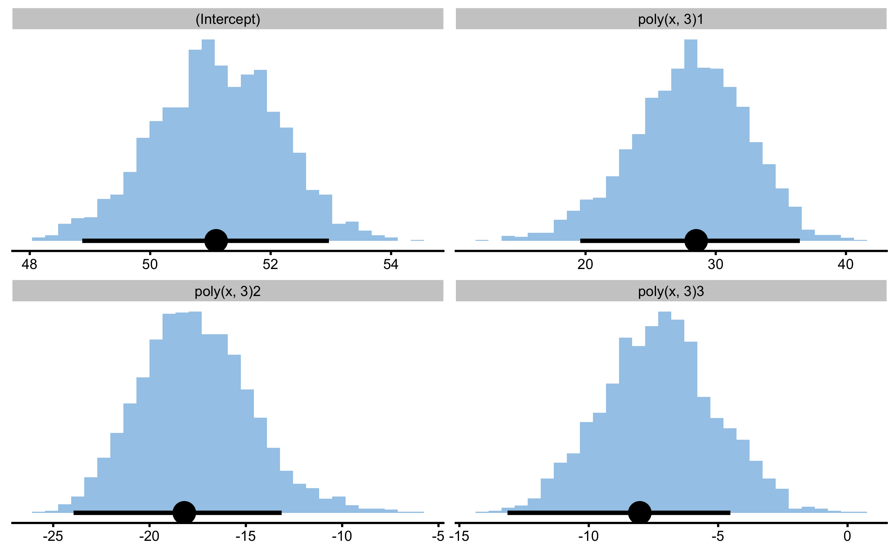
And here are the model performance estimators and their 95% bootstrap confidence intervals:
model4.boot.perf <- bmbstats::bmbstats(
data = sinus_data,
estimator_function = function(data, SESOI_lower, SESOI_upper, na.rm, init_boot) {
model <- lm(observed_y ~ poly(x, 3), data)
# Return model performance metrics
bmbstats::performance_metrics(
observed = data$observed_y,
predicted = predict(model),
SESOI_lower = SESOI_lower,
SESOI_upper = SESOI_upper,
na.rm = na.rm
)
}
)
model4.boot.perf
#> Bootstrap with 2000 resamples and 95% bca confidence intervals.
#>
#> estimator value lower upper
#> MBE -1.299275e-14 -4.125793e-14 1.055661e-14
#> MAE 1.534398e+00 1.290075e+00 2.119985e+00
#> RMSE 1.837539e+00 1.620042e+00 2.370531e+00
#> PPER 0.000000e+00 NA NA
#> SESOI to RMSE 0.000000e+00 NA NA
#> R-squared 9.108623e-01 8.286065e-01 9.396944e-01
#> MinErr -3.676547e+00 -5.001168e+00 -3.035433e+00
#> MaxErr 3.819068e+00 2.958894e+00 5.388544e+00
#> MaxAbsErr 3.819068e+00 3.001014e+00 5.097689e+00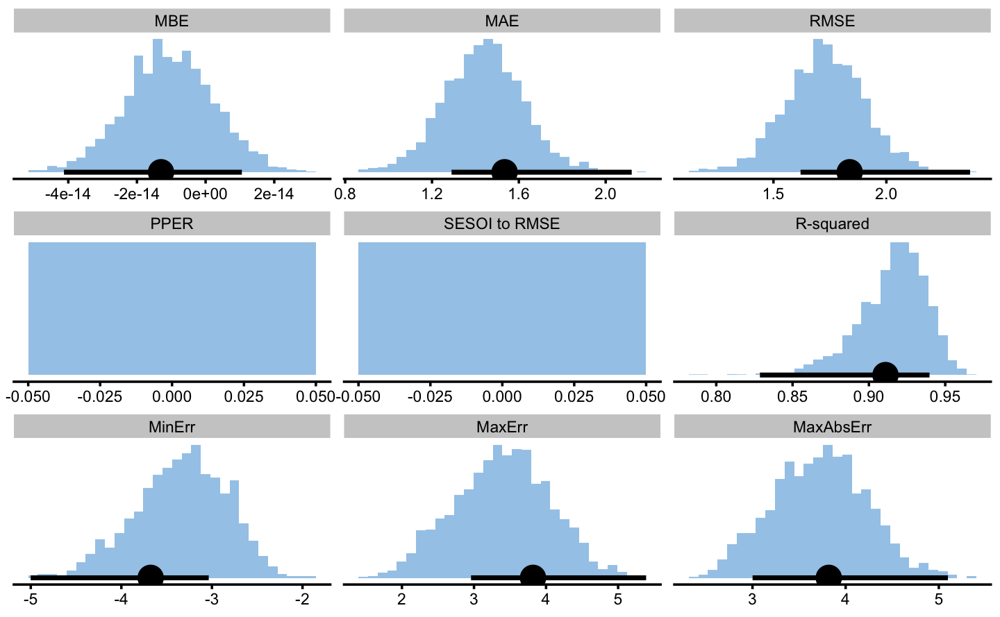
It is important to remember that these model analysis are trying to answer different questions - one predictive and one inferential.
References
Bischl, Bernd, Michel Lang, Lars Kotthoff, Julia Schiffner, Jakob Richter, Erich Studerus, Giuseppe Casalicchio, and Zachary M. Jones. 2016. “mlr: Machine Learning in R.” Journal of Machine Learning Research 17 (170): 1–5. http://jmlr.org/papers/v17/15-066.html.
Kuhn, Max. 2020. Caret: Classification and Regression Training. https://CRAN.R-project.org/package=caret.
Lang, Michel, Martin Binder, Jakob Richter, Patrick Schratz, Florian Pfisterer, Stefan Coors, Quay Au, Giuseppe Casalicchio, Lars Kotthoff, and Bernd Bischl. 2019. “mlr3: A Modern Object-Oriented Machine Learning Framework in R.” Journal of Open Source Software, December. https://doi.org/10.21105/joss.01903.
Therneau, Terry, and Beth Atkinson. 2019. Rpart: Recursive Partitioning and Regression Trees. https://CRAN.R-project.org/package=rpart.
Vaughan, Davis, and Max Kuhn. 2020. Hardhat: Construct Modeling Packages. https://CRAN.R-project.org/package=hardhat.